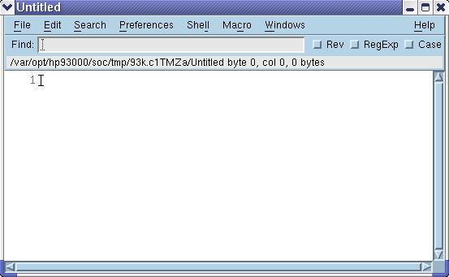
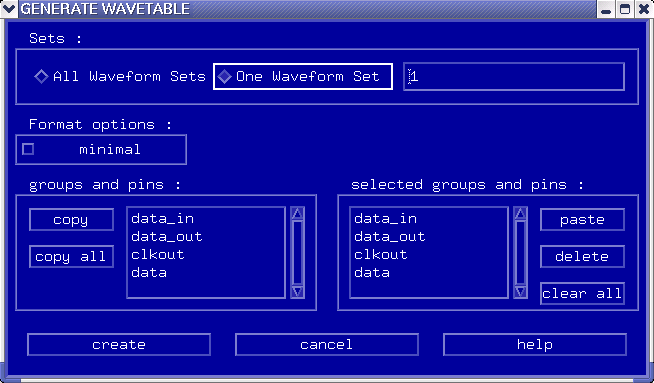
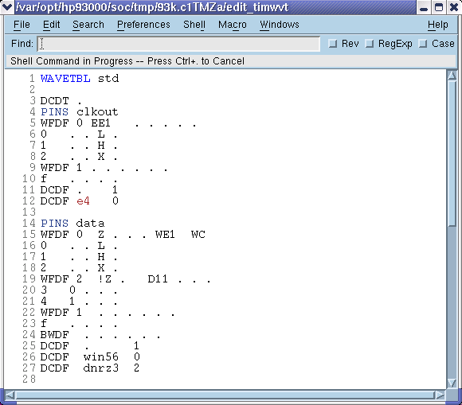

Setting up the wavetables
The first part of defining the timing is setting up the wavetable.
Procedure
- Open the Timing Setup window.
-
Choose edit wavetables in the Select pulldown menu.
A screen similar to that of the figure below appears. (In case you use the NEditor, you find the bottom line commands in the Shell menu.)

The Wavetable Editor is an ASCII based editor, where you define a format description of the pins - the shapes, window edges, etc.
Note By default, the wavetable editor displays the last wavetable file you were working on, and has nothing to do with the current Timing Setup. If you did not already have an existing description of your timing, this screen is blank. -
Click Generate at the bottom of the screen. (In case you use the
NEditor, open the Shell menu and click Generate.
Alternatively you may press the F5 key.) A screen similar to that of the figure below
appears.

This creates an ASCII description of your Timing Setup.
-
Select which waveform sets and pins you want as part of the wavetable, and click
create when satisfied with your setup.
By default all pins and waveform sets are selected.
The Wavetable Editor will now contain data, similar to that of the figure below.

- In the Wavetable Editor screen, select Shell > Download to download the settings to the test system.
- If errors are generated in the report window, debug if necessary; Error Checking Facilities for details.
-
If necessary, save the Timing Setup again in the Test Program Explorer, as it will now be
out of date.
Note Remember that the wavetable file is a temporary one. If you want to make it available at a later stage, you must either save it from within the wavetable editor (using vi, for example), or save the Timing Setup.
Functional changes
- Introduced before SmarTest 6.3.2